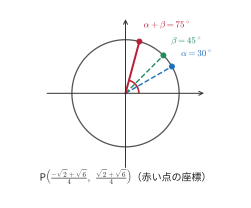

別冊章末問題の解答
1. 加法定理を用いて、\(\sin75^\circ,\ \cos75^\circ,\ \tan75^\circ\) の値を求めよ。
角を特殊角の和（差）にする
\[75^\circ=30^\circ+45^\circ\]単位円で見ると、\(75^\circ\) の動径は、\(30^\circ\) の動径を \(45^\circ\) 分だけ進めたもの。点 \(P\) の座標が \((\cos75^\circ,\ \sin75^\circ)\)。

\(\sin\) の加法定理
\[\sin75^\circ=\sin30^\circ\cos45^\circ+\cos30^\circ\sin45^\circ=\dfrac{1}{2}\cdot\dfrac{\sqrt{2}}{2}+\dfrac{\sqrt{3}}{2}\cdot\dfrac{\sqrt{2}}{2}=\dfrac{\sqrt{2} + \sqrt{6}}{4}\]\(\cos\) の加法定理
\[\cos75^\circ=\cos30^\circ\cos45^\circ-\sin30^\circ\sin45^\circ=\dfrac{\sqrt{3}}{2}\cdot\dfrac{\sqrt{2}}{2}-\dfrac{1}{2}\cdot\dfrac{\sqrt{2}}{2}=\dfrac{- \sqrt{2} + \sqrt{6}}{4}\]\(\tan\) の加法定理
\[\tan75^\circ=\dfrac{\tan30^\circ+\tan45^\circ}{1-\tan30^\circ\tan45^\circ}=\dfrac{\dfrac{\sqrt{3}}{3}+1}{1-\dfrac{\sqrt{3}}{3}\cdot1}=\sqrt{3} + 2\]（例題1の型）
【答案】
\[\sin75^\circ=\dfrac{\sqrt{2} + \sqrt{6}}{4},\ \cos75^\circ=\dfrac{- \sqrt{2} + \sqrt{6}}{4},\ \tan75^\circ=\sqrt{3} + 2\]答
2. \(\alpha\) は第2象限、\(\beta\) は第3象限の角で、\(\sin\alpha=\dfrac{8}{17}\)、\(\cos\beta=- \dfrac{4}{5}\) である。\(\sin(\alpha+\beta)\) と \(\cos(\alpha-\beta)\) の値を求めよ。
\(\cos\alpha\) を求める
\(\alpha\) は第2象限の角。\(\sin^2\alpha+\cos^2\alpha=1\) より
\[\cos\alpha=-\sqrt{1-\left(\dfrac{8}{17}\right)^2}=- \dfrac{15}{17}\]\(\sin\beta\) を求める
\(\beta\) は第3象限の角。
\[\sin\beta=-\sqrt{1-\left(- \dfrac{4}{5}\right)^2}=- \dfrac{3}{5}\]\(\sin(\alpha+\beta)\)
\[\sin(\alpha+\beta)=\sin\alpha\cos\beta+\cos\alpha\sin\beta=\left(\dfrac{8}{17}\right)\left(- \dfrac{4}{5}\right)+\left(- \dfrac{15}{17}\right)\left(- \dfrac{3}{5}\right)=\dfrac{13}{85}\]\(\cos(\alpha-\beta)\)
\[\cos(\alpha-\beta)=\cos\alpha\cos\beta+\sin\alpha\sin\beta=\left(- \dfrac{15}{17}\right)\left(- \dfrac{4}{5}\right)+\left(\dfrac{8}{17}\right)\left(- \dfrac{3}{5}\right)=\dfrac{36}{85}\]（例題2の型）
【答案】
\[\sin(\alpha+\beta)=\dfrac{13}{85},\quad \cos(\alpha-\beta)=\dfrac{36}{85}\]答
3. \(0<\theta<2\pi\) で \(\cos\theta=- \dfrac{4}{5}\)、\(\theta\) は第2象限の角である。\(\sin2\theta\)、\(\cos2\theta\)、\(\sin\dfrac\theta2\)、\(\cos\dfrac\theta2\) の値を求めよ。
\(\sin\theta\) を求める
\(\theta\) は第2象限（\(0<\theta<\pi\)）。
\[\sin\theta=\sqrt{1-\left(- \dfrac{4}{5}\right)^2}=\dfrac{3}{5}\]2倍角の公式
\[\sin2\theta=2\sin\theta\cos\theta=2\left(\dfrac{3}{5}\right)\left(- \dfrac{4}{5}\right)=- \dfrac{24}{25}\]\[\cos2\theta=2\cos^2\theta-1=2\left(- \dfrac{4}{5}\right)^2-1=\dfrac{7}{25}\]半角の公式で \(\sin\dfrac\theta2\)
\(\sin^2\dfrac\theta2=\dfrac{1-\cos\theta}{2}\)。\(\dfrac\theta2\) の範囲は \(0<\dfrac\theta2<\pi\) なので \(\sin\dfrac\theta2>0\)。
\[\sin^2\dfrac\theta2=\dfrac{1-\left(- \dfrac{4}{5}\right)}2=\dfrac{9}{10}\ \Rightarrow\ \sin\dfrac\theta2=\dfrac{3 \sqrt{10}}{10}\]\(\cos\dfrac\theta2\)
\(\cos^2\dfrac\theta2=\dfrac{1+\cos\theta}{2}\)。\(\dfrac\theta2\) は第1象限（\(0<\dfrac\theta2<\dfrac\pi2\)）なので正。
\[\cos\dfrac\theta2=\dfrac{\sqrt{10}}{10}\]（例題3の型）
【答案】
\[\sin2\theta=- \dfrac{24}{25},\ \cos2\theta=\dfrac{7}{25},\ \sin\dfrac\theta2=\dfrac{3 \sqrt{10}}{10},\ \cos\dfrac\theta2=\dfrac{\sqrt{10}}{10}\]答
4. \(0\leqq\theta<2\pi\) のとき、\(y=\sqrt{3}\sin\theta-3\cos\theta\) の最大値・最小値と、そのときの \(\theta\) の値を求めよ。
\(a\sin\theta+b\cos\theta\) の合成
\(a\sin\theta+b\cos\theta=r\sin(\theta+\alpha)\)、\(r=\sqrt{a^2+b^2}\)、\(\cos\alpha=\dfrac ar,\ \sin\alpha=\dfrac br\)。
\[r=\sqrt{(\sqrt{3})^2+(-3)^2}=2 \sqrt{3}\]角 \(\alpha\) を決める
\[\cos\alpha=\dfrac{1}{2},\quad \sin\alpha=- \dfrac{\sqrt{3}}{2}\ \Rightarrow\ \alpha=- \dfrac{\pi}{3}\]合成した式
\[y=\sqrt{3}\sin\theta-3\cos\theta=2 \sqrt{3}\sin\left(\theta- \dfrac{\pi}{3}\right)\]最大値・最小値と \(\theta\)
\(-1\leqq\sin(\theta+\alpha)\leqq1\)、\(\theta+\alpha\) は \(\pi\) の周期を含む範囲を動くので、最大・最小をとる。
\[\text{最大値 }2 \sqrt{3}\ \ (\theta=\dfrac{5 \pi}{6}),\qquad \text{最小値 }-2 \sqrt{3}\ \ (\theta=\dfrac{11 \pi}{6})\]（例題4の型）
【答案】
\[\text{最大値 }2 \sqrt{3}\ (\theta=\dfrac{5 \pi}{6}),\quad \text{最小値 }-2 \sqrt{3}\ (\theta=\dfrac{11 \pi}{6})\]答
5. \(\alpha,\ \beta\) は \(0<\alpha<\dfrac\pi2,\ 0<\beta<\dfrac\pi2\) を満たし、\(\tan\alpha=\dfrac{1}{7},\ \tan\beta=\dfrac{3}{4}\) である。\(\alpha+\beta\) の値を求めよ。
\(\tan(\alpha+\beta)\) を計算する
\[\tan(\alpha+\beta)=\dfrac{\tan\alpha+\tan\beta}{1-\tan\alpha\tan\beta}=\dfrac{\dfrac{1}{7}+\dfrac{3}{4}}{1-\dfrac{1}{7}\cdot\dfrac{3}{4}}=\dfrac{\dfrac{25}{28}}{\dfrac{25}{28}}=1\]\(\alpha+\beta\) の範囲を調べる
\(\tan\alpha=\dfrac{1}{7}>0,\ \tan\beta=\dfrac{3}{4}>0\) で \(0<\alpha,\beta<\dfrac\pi2\) だから \(0<\alpha+\beta<\pi\)。
角を決める
\(0<\alpha+\beta<\pi\) の範囲で \(\tan(\alpha+\beta)=1\) となる角は \(\dfrac\pi4\) のみ。
\[\alpha+\beta=\dfrac{\pi}{4}\]（例題5の型）
【答案】
\[\alpha+\beta=\dfrac\pi4\]答
6. \(0<\alpha<\dfrac\pi2\) で \(\sin\alpha=\dfrac{2}{3}\) のとき、\(\sin3\alpha\) の値を求めよ。
3倍角の公式
\[\sin3\alpha=3\sin\alpha-4\sin^3\alpha\]
代入
\[3\cdot\dfrac{2}{3}-4\cdot\left(\dfrac{2}{3}\right)^3=\dfrac{22}{27}\]（例題6の型）
【答案】
\[\dfrac{22}{27}\]答
7. 2直線 \(y=4\,x\) と \(y=\dfrac{1}{4}\,x\) のなす鋭角を \(\theta\) とするとき、\(\tan\theta\) の値を求めよ。
傾きと角
直線 \(y=4\,x\) の傾きは \(\tan\alpha=4\)、\(y=\dfrac{1}{4}\,x\) は \(\tan\beta=\dfrac{1}{4}\)。
加法定理
\[\tan(\alpha-\beta)=\dfrac{\tan\alpha-\tan\beta}{1+\tan\alpha\tan\beta}=\dfrac{4-\dfrac{1}{4}}{1+4\cdot\dfrac{1}{4}}=\dfrac{15}{8}\]
なす角
\(\tan\theta=\dfrac{15}{8}\)。
（例題7の型）
【答案】
\[\tan\theta=\dfrac{15}{8}\]答
8. \(0<\alpha<\dfrac\pi2\) で \(\tan\alpha=\dfrac{5}{12}\) のとき、\(\sin2\alpha,\ \cos2\alpha\) の値を求めよ。
tan のまま2倍角
\[\sin2\alpha=\dfrac{2\tan\alpha}{1+\tan^2\alpha},\qquad \cos2\alpha=\dfrac{1-\tan^2\alpha}{1+\tan^2\alpha}\]
代入
\[\sin2\alpha=\dfrac{2\cdot\dfrac{5}{12}}{1+\dfrac{25}{144}}=\dfrac{120}{169},\qquad \cos2\alpha=\dfrac{1-\dfrac{25}{144}}{1+\dfrac{25}{144}}=\dfrac{119}{169}\]（例題8の型）
【答案】
\[\sin2\alpha=\dfrac{120}{169},\ \cos2\alpha=\dfrac{119}{169}\]答
9. \(0^\circ\leqq\theta<360^\circ\) のとき、方程式 \(\sqrt{3}\sin\theta-1\cos\theta=1\) を解け。
合成
\[\sqrt{3}\sin\theta-1\cos\theta=2\sin\left(\theta-30^\circ\right)\]
方程式
\[2\sin\left(\theta-30^\circ\right)=1\ \Longrightarrow\ \sin\left(\theta-30^\circ\right)=\dfrac{1}{2}\]
解
\[\theta=60^\circ,\ 180^\circ\]（例題9の型）
【答案】
\[\theta=60^\circ,\ 180^\circ\]答
10. \(0<\alpha<\dfrac\pi2,\ 0<\beta<\dfrac\pi2\) で \(\tan\alpha=\dfrac{1}{4},\ \tan\beta=\dfrac{3}{5}\) のとき、\(\alpha+\beta\) の値を求めよ。
加法定理
\[\tan(\alpha+\beta)=\dfrac{\dfrac{1}{4}+\dfrac{3}{5}}{1-\dfrac{1}{4}\cdot\dfrac{3}{5}}=1\]
範囲
\(\tan\alpha>0,\ \tan\beta>0\) より \(0<\alpha,\beta<\dfrac\pi2\)、\(0<\alpha+\beta<\pi\)。
決定
\(\tan(\alpha+\beta)=1\) より \(\alpha+\beta=\dfrac{\pi}{4}\)。
（例題10の型）
【答案】
\[\dfrac{\pi}{4}\]答